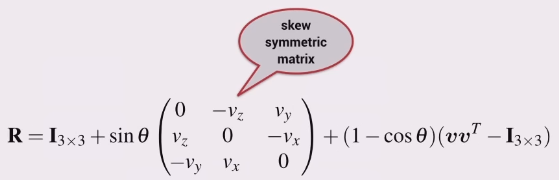

The orientation of a body in 3D can also be described by a single rotation about a particular axis in space.
Need to know the axis of rotation vector \(\boldsymbol{v}\), and the angle of rotation about the vector \(\boldsymbol{\theta}\).
We observe that the axis around which the rotation occurs must be unchanged by the rotation, therefore the rotation axis must be an eigenvector of \(\boldsymbol{R}\).
A rotation matrix has three eigenvectors:
If you know \(\theta\) and the eigenvector, then the rotation matrix can be found using the Rodrigues equation.
